学习
一套真正的课程，而不只是闪卡
MorseCQ 按资深报务员推荐的方式教学：从第一天起就以全速发音学字符，只有当逐字符的表现证明你已稳定抄收，才加入新字符。
- 平缓的第一课：先听“嘀”和“嗒”，再学 K 和 M，有引导地辨认与拍发之后再独立抄收。
- Koch 教学法：42 课，通过挑战推进，依据逐字符的掌握情况。
- Farnsworth 间距：字符快速，字间留足思考时间。
- 间隔复习与错题本：抄错的字符会在到期时再次出现。
- 每日计划与连续打卡，每天都练一点。
MorseCQ 是免费、无需账号的摩尔斯电码训练器。系统的 Koch 课程、抄收练习、拍发练习与模拟通联，全部在你自己的设备上运行，无需联网。
全部平台与安装包 · 源代码 · 摩尔斯聊天：DitMesh
● 最新版本 v1.0.1 · 2026-10-1101 — 为什么选 MorseCQ
Koch 教学法 + Farnsworth 字间距，42 课，间隔复习与每日计划。
先有引导地入门，再独立抄收与拍发，节奏真实、反馈即时。
课程、练习、录音与进度都保存在本机。无账号、无统计、无广告。
手机、平板与桌面，触屏、键盘或 USB 电键都能用，支持十种语言。
02 — 功能详解
学习、练习、模拟通联、参考资料、无线电工具与本地进度，集中在一款专注的训练器中。
学习
MorseCQ 按资深报务员推荐的方式教学：从第一天起就以全速发音学字符，只有当逐字符的表现证明你已稳定抄收，才加入新字符。
抄收与拍发练习
抄收练习覆盖你在空中会听到的一切：
拍发练习支持屏幕上的手键、双桨自动键（iambic）、键盘以及 USB 电键适配器。流式解码器实时显示你拍出的内容，练习小结会告诉你“嗒”是否太短、间隔是否太长。
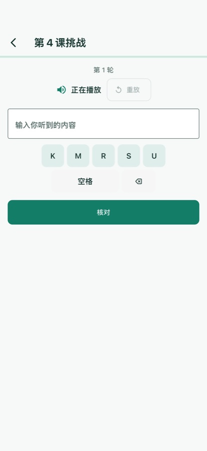
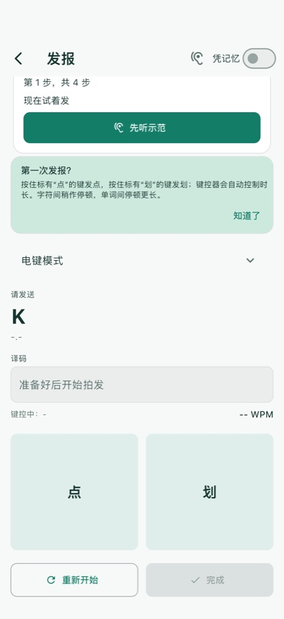
走向上机
字母听熟之后，MorseCQ 继续带你走：第一次通联、日常闲聊、比赛三条目标路线，以及一个扮演对方电台的模拟器。
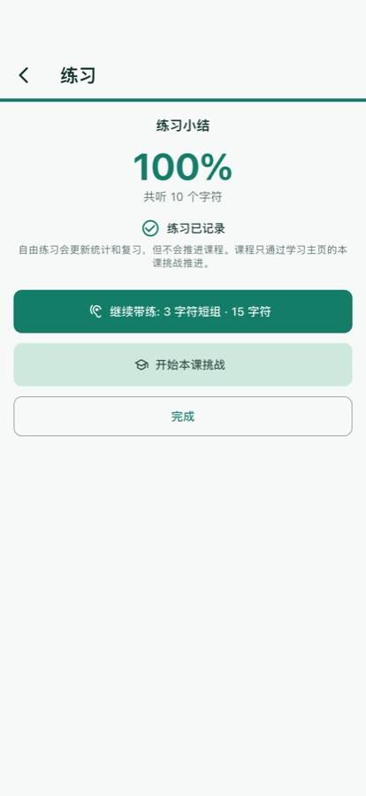
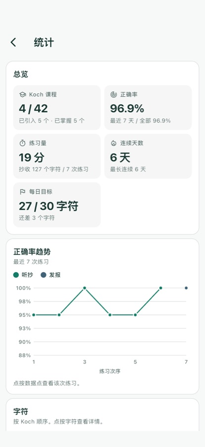
从现场音频解码摩尔斯电码，电台、练习振荡器或视频都行；也可以在音频工作台里逐段分析录音。
字母、标点、勤务符号、Q 简语和 CW 缩略语，外加支持中文电码的文本 ↔ 摩尔斯双向翻译器。
梅登黑德网格定位（含距离与方位角）、IARU 频段边界（含天线长度）、CW 速度换算、RST 报告生成器和 UTC 时钟。
准确率趋势、逐字符掌握度网格、显示你常混淆哪些字符的热力图，以及练习日历。
Modern Calm、Classic Brass、Night Radio、Paper Handbook、Fresh Cartoon，每种都有浅色与深色，界面支持十种语言。
全平台低延迟侧音、手机振动反馈、所有平台的屏幕闪光，速度、音调与间距随你设置。
进度、素材与录音保存在本机，可随时从“我”页面清除；不收集任何个人数据。
在 macOS、Windows、Linux 上记住窗口大小，支持关闭到托盘、托盘菜单和快捷键。
一次练习
打字、点手键、按双桨电键或接上 USB 电键，MorseCQ 把你的拍发解码成文字。
训练器在本机检查节奏、准确率与拍发质量，再把结果写入本地进度。
按你选择的速度和音调回放题目与自己的拍发，然后继续练习。
03 — 试一试
输入一段文字，听听 MorseCQ 播放题目时的样子。
04 — 界面一览
均由应用自带的截图流程从 MorseCQ 1.0.1 生成的真实画面，不是效果图。
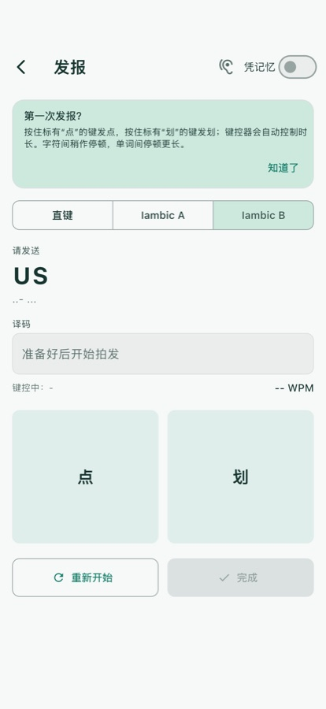
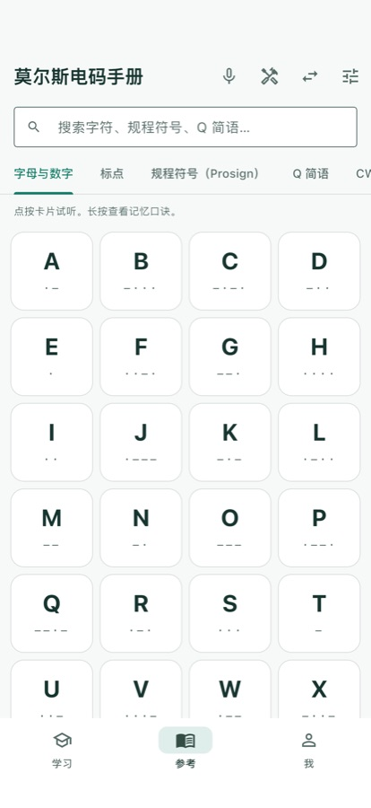
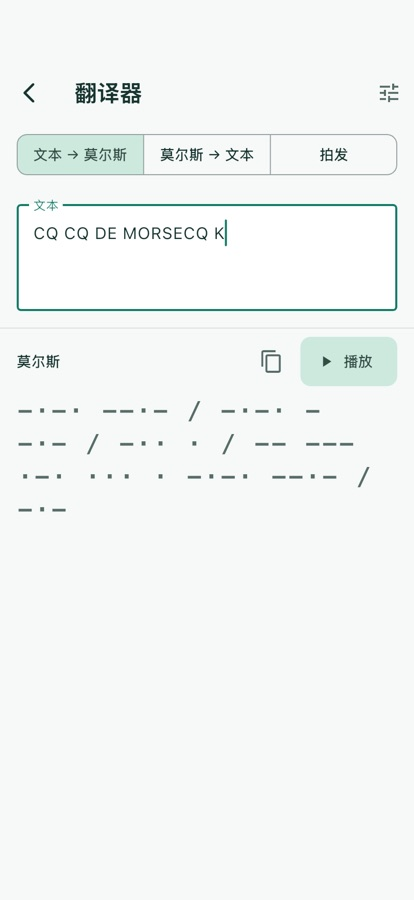
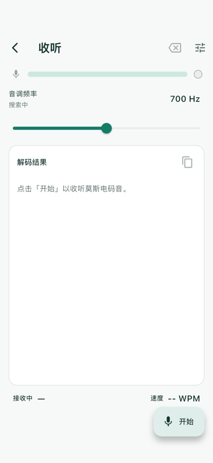
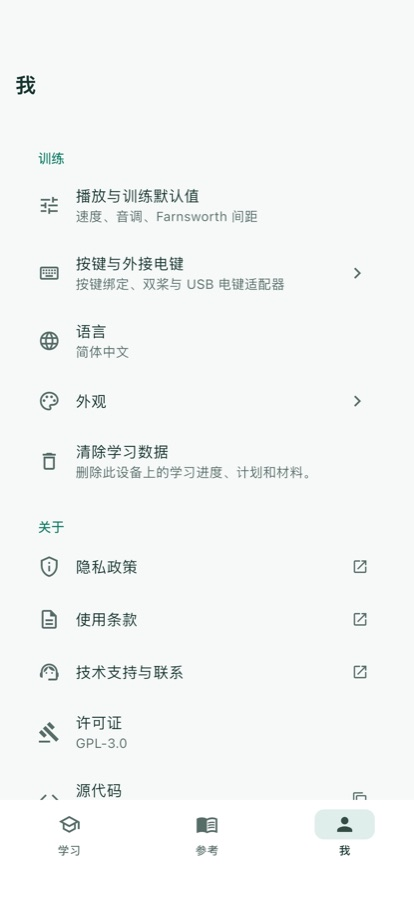
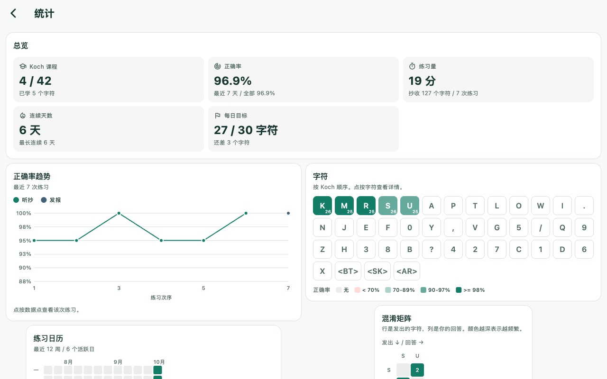
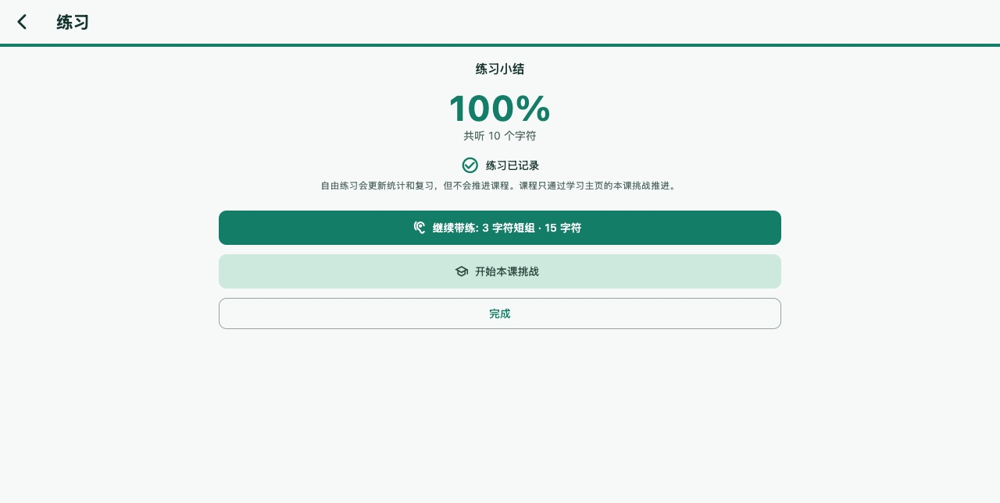
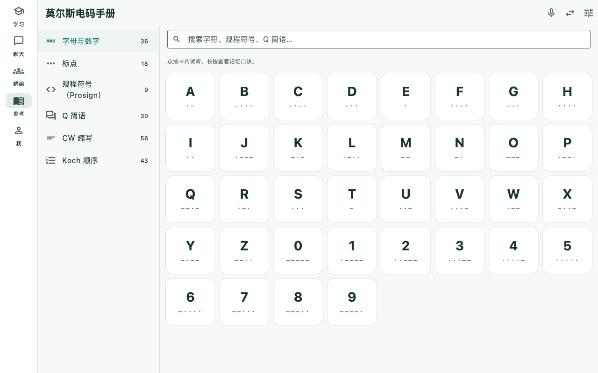
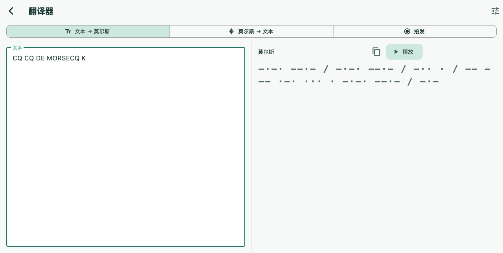
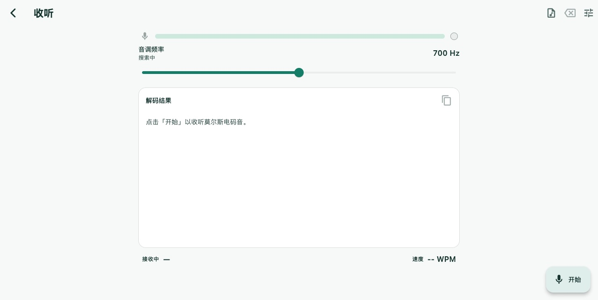
05 — 下载
免费，无需注册。所有安装包都由 CI 从公开源码构建，发布在 GitHub Releases。
macOS 13 及以上 · Universal2：Apple 芯片与 Intel
尚未公证，见安装指南。
Windows 10 / 11 · x64
尚未签名，SmartScreen 可能要求确认。
x86_64 · glibc 不低于 Ubuntu 24.04
Android 7.0 及以上 · arm64-v8a、armeabi-v7a、x86_64
iOS / iPadOS 14 及以上 · 未签名构建
暂未上架 App Store，需自行签名或侧载（如 AltStore、Sideloadly）。
每个版本都附带 SHA256SUMS 文件。将它与你下载文件的哈希比对：macOS 用 shasum -a 256 <文件>，Linux 用 sha256sum <文件>，PowerShell 用 Get-FileHash <文件>。
9bed985ce332cb164115b6d1b019d5faccc44d0ba3dc650e05cf47f071dee909 morsecq-1.0.1-android.aab 4e3578ad825c4c32c6abe6091a458d86e4d5e9aba0b31fc6bec3119fc3bcced3 morsecq-1.0.1-android.apk c15dcdc553ad7e8de6d7abab1352cbb57134824ed78f629392947cf3300182a5 morsecq-1.0.1-ios-unsigned.ipa eecc7eceafe699bfa25350f57291bb0197fdbc7ab0d37360886944a109505521 morsecq-1.0.1-linux-x86_64.deb 56785ee857e5ae8af89246c541d3cbedff60040f8b916ebea6b9b210498d0232 morsecq-1.0.1-linux-x86_64.rpm 67a32fde0513e8dded9389016d65efe24f1c83032484373991fee19643493269 morsecq-1.0.1-linux-x86_64.tar.gz 672197a7321d6049c4a667e0148c235d441df74f6a76b3115fe68f159afd92b8 morsecq-1.0.1-macos-universal2.pkg 0d4b790d1001234798600f04dada2c5b17ae26f2a9f3dfb8e09a0c19b2a0bfe5 morsecq-1.0.1-macos-universal2.zip 363d420c116d45cde06d292f71f7a7a30e8693ba237522d83205fb595d981f10 morsecq-1.0.1-windows-x64.msi 2b8f83f1ab36d4c245a104050d73bd5dd9680a32289ea8740df63fb5cee9b903 morsecq-1.0.1-windows-x64.zip
06 — 安装与上手
安装包尚未代码签名或公证，系统会要求你确认一次。各平台的做法如下。
/Applications。# or install from Terminal
sudo installer -pkg ~/Downloads/morsecq-1.0.1-macos-universal2.pkg -target /
# optional: silent install from PowerShell
msiexec /i morsecq-1.0.1-windows-x64.msi /qn
# Debian / Ubuntu sudo apt install ./morsecq-1.0.1-linux-x86_64.deb # Fedora / openSUSE sudo dnf install ./morsecq-1.0.1-linux-x86_64.rpm # portable tar xzf morsecq-1.0.1-linux-x86_64.tar.gz && ./morsecq/morsecq
# or sideload with adb
adb install morsecq-1.0.1-android.apk
git clone https://github.com/agentx-icu/morsecq.git cd morsecq dart pub get --enforce-lockfile cd apps/morsecq && flutter run
07 — 常见问题
不需要。MorseCQ 不会发射任何信号，任何人都可以学习。如果你持有执照，它也是在两次上机之间保持 CW 手感的好办法。
都不需要。打开应用即可开始学习，课程、练习、素材与进度都在本机运行。
MorseCQ 是离线训练器，不含聊天或通话。摩尔斯聊天请使用独立应用 DitMesh。
数据只保存在你的设备上。MorseCQ 不收集任何个人数据，没有统计和广告。“我 → 清除学习数据”可删除进度、素材与录音。详见隐私政策。
1.0.1 安装包尚未代码签名或公证。安装指南说明了各平台如何确认。可用 SHA256SUMS 校验任何下载文件。
十种：英语、简体中文、繁体中文、日语、韩语、德语、法语、西班牙语、葡萄牙语和俄语。翻译器还支持中文电码。
是的。MorseCQ 是遵循 GNU GPL v3.0 的自由软件，欢迎到 GitHub 提交问题和贡献代码。